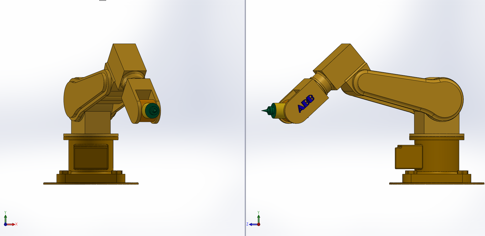
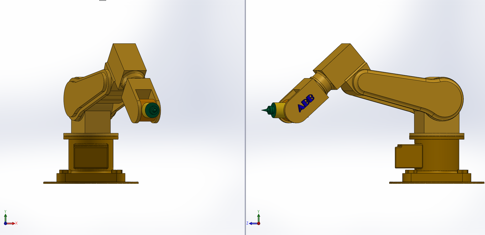
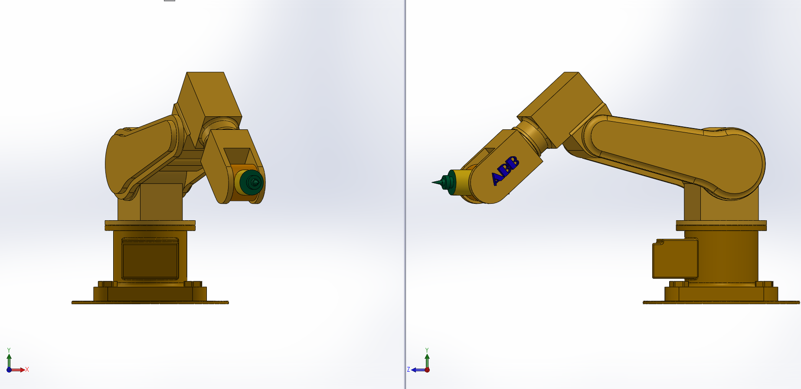

Design Visuals
 

Category: CAD Design
Tools Used: SolidWorks
This project involves the complete CAD modeling of an ABB-style industrial robotic arm. The design focuses on realistic joint articulation, structural integrity, and accurate component proportions suitable for industrial automation applications.
Each segment of the robot arm was modeled as an individual part and assembled using appropriate mates to replicate real-world rotational and translational motion. Special attention was given to the base, arm joints, and end-effector interface to ensure mechanical realism.

The final assembly successfully demonstrates realistic robot arm geometry and articulation. This project strengthened my understanding of complex assemblies, joint constraints, and industrial robot design principles used in automated manufacturing systems.